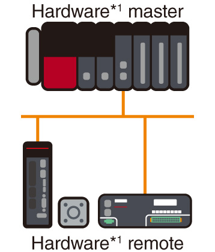
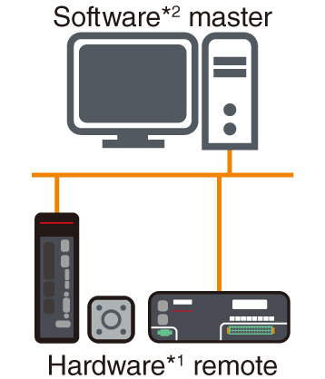
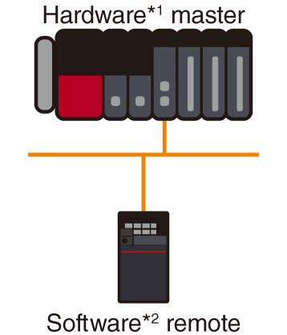
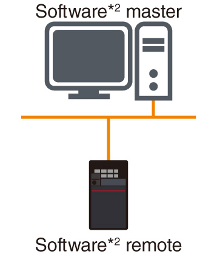

Network-related products |
Programmable Controllers MELSEC
Fitur CC-Link IE TSN

Konektivitas
Menggabungkan kontrol waktu nyata dan komunikasi TCP/IPTeknologi TSN
- Ethernet Standar
- Memanfaatkan teknologi TSN
- Komunikasi campuran
Dukungan Ethernet standar memungkinkan berbagai perangkat yang kompatibel dengan jaringan dan perangkat lunak diagnostik untuk digunakan, mewujudkan infrastruktur jaringan terintegrasi yang mudah dirawat. Komunikasi Ethernet yang mendukung komunikasi TCP/IP seperti informasi yang telah dikumpulkan dan dianalisis oleh perangkat edge dan sistem IT dapat dipadukan dalam jalur yang sama dengan komunikasi kontrol real-time CC-Link IE TSN.
Penggantian perangkat jarak jauh yang mudah
- Startup yang lebih singkat
Parameter stasiun jaringan yang disimpan dalam modul CPU didistribusikan secara otomatis ke perangkat jarak jauh saat menginisialisasi jaringan dan saat mengembalikan stasiun yang terputus ke jaringan. Registrasi parameter individual ke setiap stasiun tidak diperlukan setelah mengganti perangkat jarak jauh.
Konfigurasi sistem yang fleksibel dengan beberapa topologi
- Sistem yang fleksibel
Topologi garis, bintang, dan cincin didukung, memungkinkan konfigurasi sistem yang fleksibel. Gunakan topologi garis untuk kontrol berkecepatan tinggi dan berkinerja tinggi. Hal ini terwujud ketika sistem dikonfigurasi dengan stasiun perangkat yang kompatibel dengan CC-Link IE TSN saja tanpa jalur cabang tambahan. Pilih topologi bintang jika diperlukan konfigurasi sistem yang lebih fleksibel. Dengan menggunakan sakelar Ethernet, stasiun perangkat dapat dengan mudah didistribusikan untuk mencapai konfigurasi sistem yang diinginkan. Topologi cincin ideal untuk sistem yang membutuhkan keandalan tinggi. Komunikasi data berlanjut dengan stasiun normal bahkan jika kabel terputus atau terjadi kesalahan pada stasiun perangkat melalui komunikasi multiarah.
Topologi garis
Topologi bintang
Topologi cincin
Integrasikan perangkat jaringan lainnya
Modul induk/lokal CC-Link IE TSN Plus (RJ71GN11-EIP) mendukung CC-Link IE TSN dan EtherNet/IP™. Satu port dapat dihubungkan ke jaringan CC-Link IE TSN, sementara port lainnya dapat dihubungkan ke jaringan EtherNet/IP™. Bahkan jika kedua jaringan digunakan secara bersamaan, fungsi yang mirip dengan modul induk/lokal CC-Link IE TSN dapat digunakan tanpa memengaruhi kinerja komunikasi CC-Link IE TSN. Kedua jaringan dapat diatur dengan mudah dalam perangkat lunak rekayasa GX Works3.
Visualisasi sensor dan penghematan ruang
- Koneksi sensor (iQSS)
Modul jembatan AnyWireASLINK mengintegrasikan sensor yang kompatibel dengan AnyWireASLINK melalui CC-Link IE TSN. Pengaturan dan diagnostik sensor yang kompatibel dengan AnyWireASLINK dapat dilakukan dengan mudah dari perangkat lunak rekayasa GX Works3 dengan menghubungkan ke pengontrol yang dapat diprogram melalui jaringan.
Sistem yang sangat scalable yang memanfaatkan perangkat terbaik di kelasnya
- Berbagai perangkat
Mendukung implementasi perangkat berkinerja tinggi yang diwujudkan dengan ASIC/FPGA khusus, dan perangkat berbiaya rendah menggunakan tumpukan protokol perangkat lunak pada chip Ethernet standar.
| Item | Configuration 1 | Configuration 2 | Configuration 3 | Configuration 4 |
|---|---|---|---|---|
| Konfigurasi Sistem |  |
 |
 |
 |
| Transmission speed | ||||
| 1 Gbps | ● | ● | ● | ● |
| 100 Mbps | ● | ● | ● | ● |
- *1.Master perangkat keras/jarak jauh: Pengembangan dengan LSI khusus (ASIC, FPGA)
- *2.Master perangkat lunak/jarak jauh: Pengembangan dengan tumpukan protokol perangkat lunak (chip Ethernet standar)